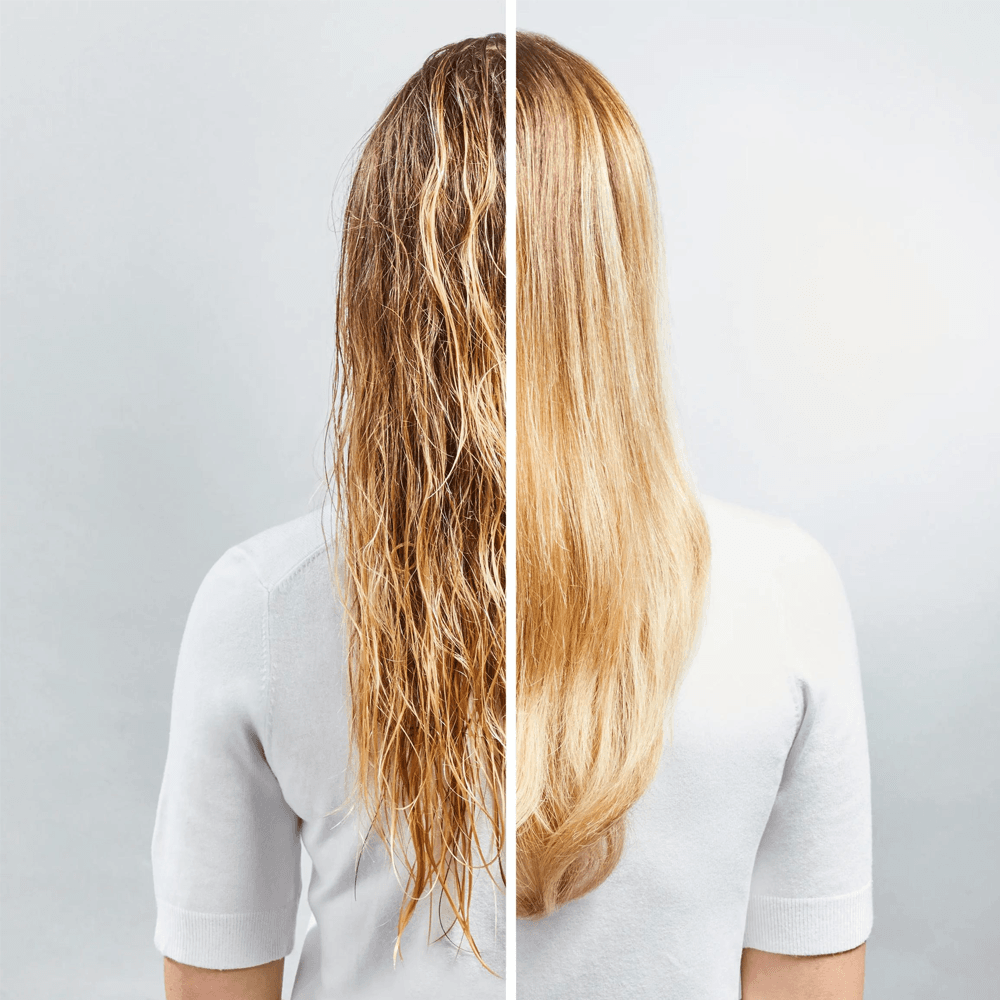
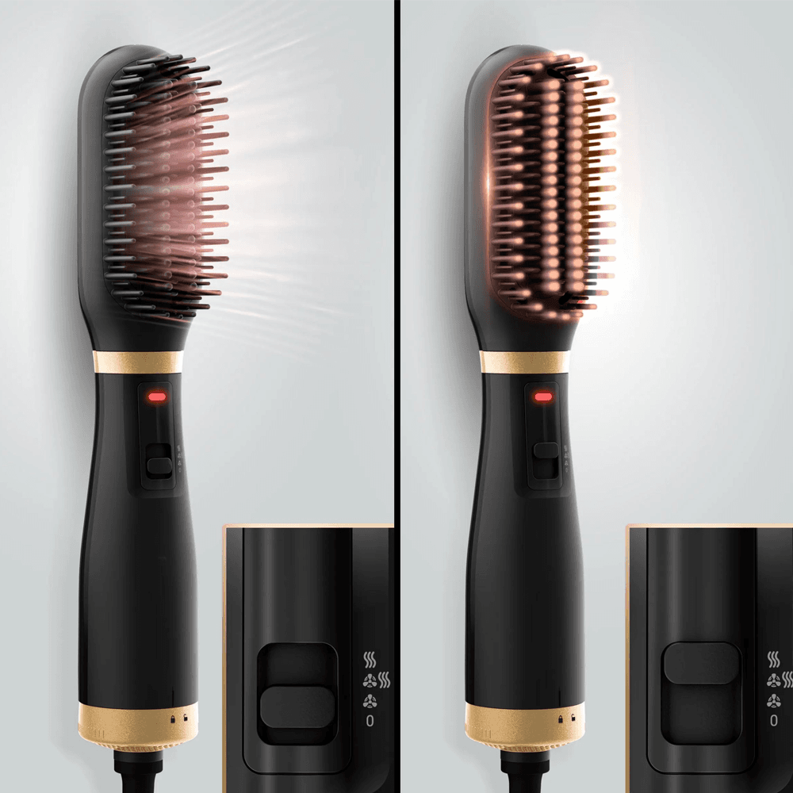
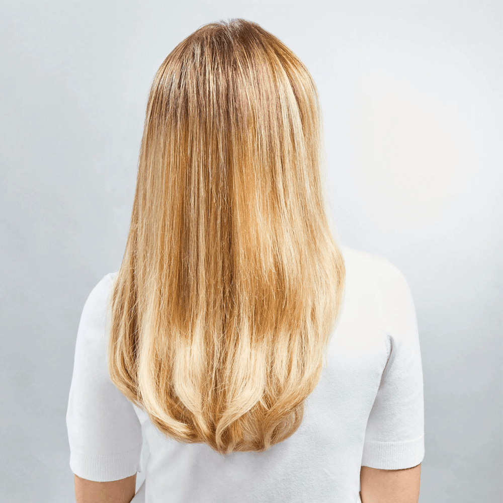
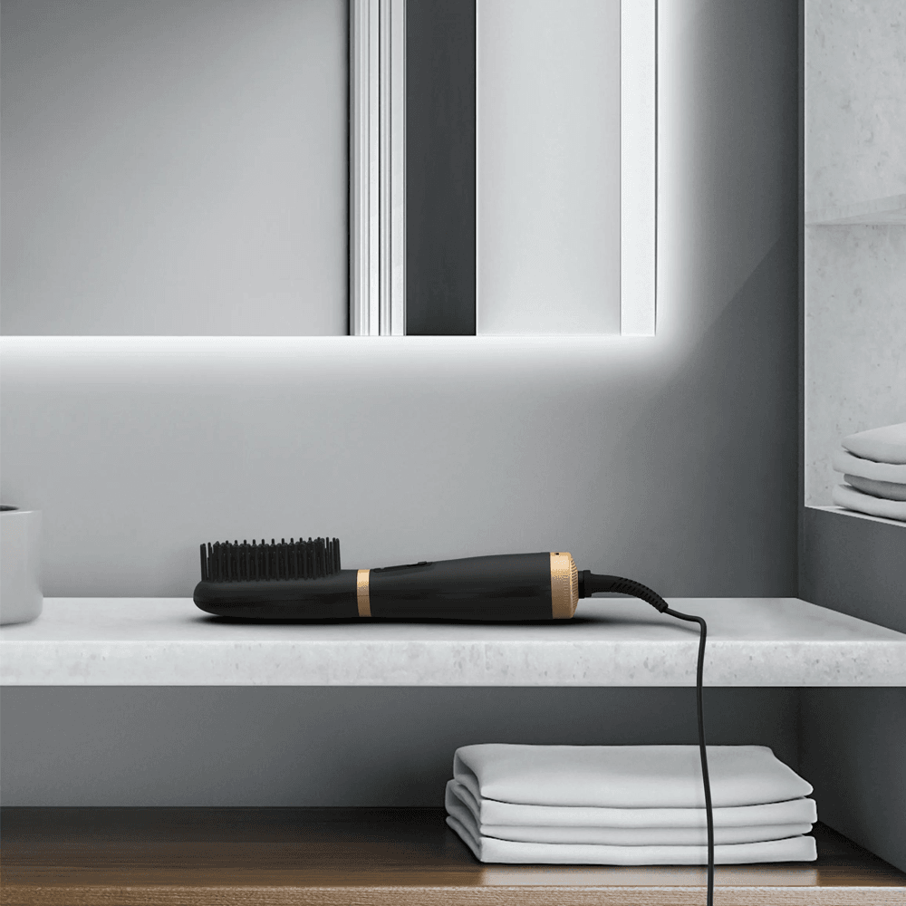
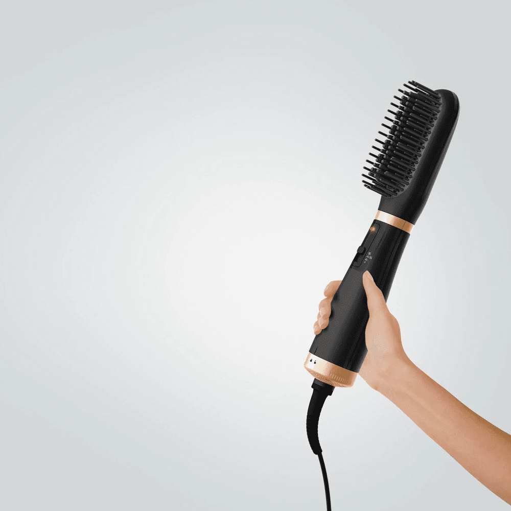
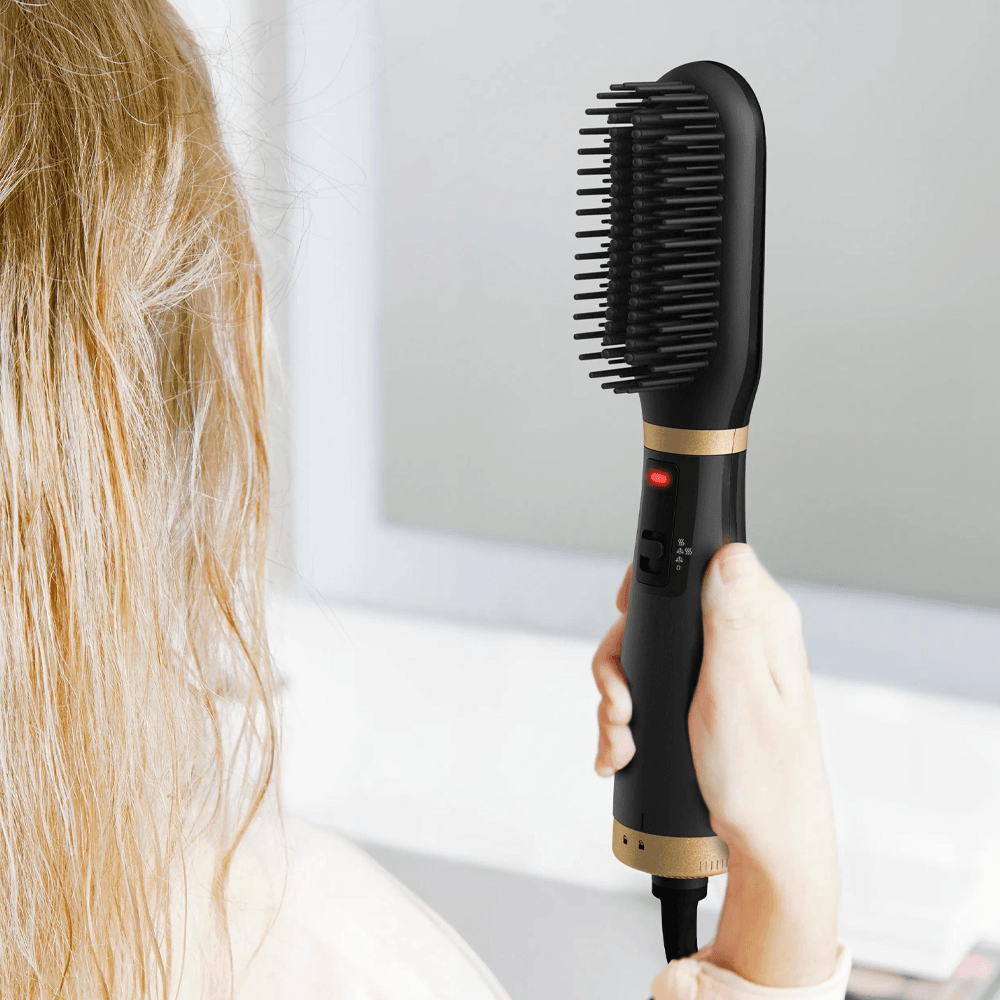

<style type="text/css">
  .section-iu {
    width: 100%;
    background: white;
    padding: 60px 20px;
    display: flex;
    justify-content: center;
    max-width: 1280px !important;
    margin: 0 auto;
  }

  .galeri-iu {
    width: 100%;
    max-width: 1200px;
    display: grid;
    grid-template-columns: repeat(2, 1fr);
    gap: 60px 80px;
  }

  .kart-iu {
    text-align: center;
  }

  .foto-iu {
    width: 100%;
    aspect-ratio: 1 / 1;
    object-fit: cover;
    border-radius: 8px;
    display: block;
    border-radius: 50px;
  }

  .kart-iu h3 {
    margin: 30px 0 15px;
    font-size: 22px;
    color: #4d4d4d;
  }

  .kart-iu p {
    font-size: 18px;
    color: #272727;
    line-height: 1.7;
  }

  @media (max-width: 992px) {
    .galeri-iu {
      grid-template-columns: 1fr;
      gap: 50px;
    }
  }

  @media (max-width: 600px) {
    .section-iu {
      padding: 40px 15px;
    }

    .kart-iu h3 {
      font-size: 20px;
    }

    .kart-iu p {
      font-size: 16px;
    }
  }
</style>
<section class="section-iu">
  <div class="galeri-iu">
    <div class="kart-iu">
      
      <h3>Hızlı Şekillendirme</h3>

      <p>
        Islak ve kuru saçta çalışan, germe, kurutma ve düzleştirme işlevlerini
        bir araya getiren bu şekillendirme aracıyla hızlı ve etkili 2’si 1 arada
        şekillendirmeyi keşfedin.
      </p>
    </div>

    <div class="kart-iu">
      
      <h3>2’si 1 arada Şekillendirme</h3>

      <p>
        Islak saç, hafif nemli saç ve kuru saç için 3 ayarlanabilir ısı/hava
        ayarıyla, sıcak uçlar ve hava akışı olmadan düzleştirme veya rötuşlar
        için ideal kullanım sunar.
      </p>
    </div>

    <div class="kart-iu">
      
      <h3>Işıltılı Parlaklık</h3>

      <p>
        İyon jeneratörlü tam parlaklık sistemi, statik elektriği ve kabarmayı
        azaltarak saçları daha pürüzsüz ve kolay şekil alır hale getirir, göz
        alıcı bir parlaklık kazandırır.
      </p>
    </div>

    <div class="kart-iu">
      
      <h3>Kullanımı Kolay</h3>

      <p>
        Isıtmalı hava fırçası, sezgisel "fırçalama" hareketiyle kolay sonuçlar
        sunar. Kompakt ve hafif tasarımı sayesinde rahat kullanım sağlar.
      </p>
    </div>

    <div class="kart-iu">
      
      <h3>Kusursuz Kayganlık</h3>

      <p>
        Özel seramik kaplama sayesinde talep üzerine mükemmel kayganlık ve
        yumuşak, parlak saçlar elde edilir – her gün ışıldayan sonuçlar için.
      </p>
    </div>

    <div class="kart-iu">
      
      <h3>Ergonomik Tasarım</h3>

      <p>
        Son derece kompakt bu şekillendirme aracı, sezgisel ve ergonomik
        tutuşuyla birlikte 360 derece dönebilen kablosu sayesinde rahat ve
        serbest kullanım sunar.
      </p>
    </div>
  </div>
</section>
